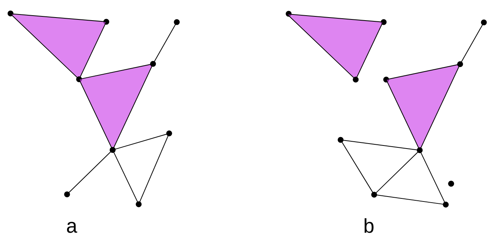

Introduction to Topological Data Analysis
Last updated on 2026-02-20 | Edit this page
Overview
Questions
- What is topological data analysis?
Objectives
- Understand that simplices comprise vertices, edges, triangles, and higher dimensions structures.
Topological data analysis
Topological data analysis (TDA) is a technique that uses concepts from topology to analyze complex data and find patterns and structures that are not apparent at first glance. This technique is based on constructing a simplicial complex composed of a collection of simple geometric objects called simplices. The topology of this complex is used to analyze and visualize the relationships between the data.
Simplex
A simplex (plural simplices) is a simple geometric object of any dimension (point, line segment, triangle, tetrahedron, etc.). Simplices are used to construct simplicial complexes. The following figure shows some examples of simplices.
{kind=link}
Simplex
Given a set $ P=\{p_0,…,p_k\}\subset \mathbb{R}^d $ of $ k+1 $ affinely independent points, the k-dimensional simplex \(\sigma\) (or k-simplex for short) spanned by \(P\) is the set of convex combinatios
$ \sum_{i=0}^k\lambda_ip_i, \quad with \quad \sum_{i=0}^k\lambda_i = 1 \quad \lambda_i \geq 0. $
The points \(p_0, ..., p_k\) are called the vertices of \(\sigma\).
Simplicial complex
A simplicial complex is a mathematical structure comprising a collection of simplices constructed from a data set. In other words, a simplicial complex is a collection of vertices, edges, triangles, tetrahedra, and other elements that follow specific rules. As a starting point, we can think of a simplicial complex as extending the notion of a graph only formed by vertices and edges. The following figure shows an example of a simplicial complex.
{kind=link}
Simplicial complex
A simplicial complex \(K\) in $ \mathbb{R}^d $ is a collection of simplices s.t:
- Any face of a simplex from \(K\) is also a simplex of \(K\),
- The intersection of any two simplices of \(K\) is either empty or a common face of both<<.
More generally, we can define a simplicial complex as:
Let \(P= \{p_1,...,p_n\}\) be a
(finite) set. An abstract simplicial complex \(K\) with vertex set \(P\) is a set of subsets of \(P\) satisfying the two conditions:
- the elements of \(P\) belong to \(K\),
- if \(\tau \in K\) and \(\sigma \subset \tau\), then \(\sigma \in K\).
The elements of \(K\) are the simplices.
In the following figure, the left panel “a)” is an example of a simplicial complex, while the right panel “b)” is not because it does not satisfy the second mathematical condition. In the figure, a triangle is part of the simplicial complex but one vertex is not. Colloquially speaking it fails that if one simplex is part of the simplicial complex, then all its simplices of the lower dimensions must also be part of the complex. Mathematically speaking, it is not true that the face of a simplex from \(K\) is also a simplex of \(K\) or that the intersection of any pair of simplices is either empty or a face.
{kind=link}
Simplicial complexes can be seen simultaneously as geometric/topological spaces (suitable for topological/geometrical inference) and as combinatorial objects (abstract simplicial complexes, suitable for computations).
Exercise 1(Beginner): Identify the simplices
In the following graph, we have two representations of simplicial complexes.
{kind=link}

> > In this figure, How many 0-simplices(vertices), 1-simplices(edges), and 2-simplices(triangles) does each one of the simplicial complexes have? > > ## Solution > >> > | | Figure a | Figure b |
> > |:———–:|:————:|:————:|
> > | \(0-simplex\) | 9 | 11 |
> > | \(1-simplex\) | 11 | 12 |
> > | \(2-simplex\) | 2 | 2 |
> > > {: .solution} {: .challenge}
Čech and (Vietoris)-Rips complexes
Vietoris-Rips complex and Čech complex are two types of simplicial complexes constructing discrete structures from sets of points in space.
The Vietoris-Rips complex is constructed from a set of points in a metric space. Given a set of points and a distance parameter called the “threshold,” points within a distance less than or equal to the threshold are connected, forming the 1-simplices of the complex. Higher-dimensional simplices are then constructed by closing under combinations of 1-simplices that form a complete simplex, i.e., all fully connected subsets. The Vietoris-Rips complex captures the connectivity information between points and their topological structure at different scales.
In a practical example, the set of points represents your dataset, such as a group of genomes, and the distance could be a Hamming distance. ‘Threshold’ represents the selected distance at which two genomes are considered to be related.
Vietoris complex
Given a point cloud $P=\{p_1,…,p_n\}\subset \mathbb{R}^d $, its
Rips complex of radius \(r>0\) is the simplicial complex \(R(P,r)\) such that:
\(vert(R(P,r))=P\), and
\[ \sigma = [p_{i_0},p_{i_1},...,p_{i_k}] \in
R(P,r) \quad iff \quad \lVert p_{i_j} -p_{i_l} \rVert \leq 2r,
\forall j,l\leq k \] with \[ j \neq
k\]
On the other hand, the Čech complex is based on constructing simplicial cells rather than simply connecting points at specific distances. Given a set of points and a distance parameter, all sets of points whose balls of radius equal to the distance parameter have a non-empty intersection are considered. These sets of points become the simplices of the Čech complex. Similar to the Vietoris-Rips complex, higher-dimensional simplices can be constructed by closing under combinations of lower-dimensional simplices that form a complete simplex.
Čech complex
Given a point cloud \(P=\{p_1,...,p_n\}\subset \mathbb{R}^d\),
its Cech complex of radius \(r>0\) is the simplicial complex \(C(P,r)\) such that: \(vert(C(P,r))=P\), and
\[ \sigma = [p_{i_0},p_{i_1},...,p_{i_k}] \in
C(P,r) \quad iff \quad \cap_{j=0}^k Bp_{i_j} \neq \emptyset
\]
In the following figure, we have the representation of the Rips simplicial complex (left) and the Cech simplicial complex (right), for the same set of points \(P={p_1,...,p_9}\).
{kind=link}
The following table shows the number of simplices for each simplicial complex.
| \(R(P,r)\) | \(C(P,r)\) | |
|---|---|---|
| \(0-simplex\) | 9 | 9 |
| \(1-simplex\) | 9 | 9 |
| \(2-simplex\) | 2 | 1 |
The difference lies in the \(2-simplices\). Given 3 points, to construct a 2-simplex (triangle) in the Cech complex, the 3 balls of radius \(r\) must intersect each other, while in the Rips complex, the balls must intersect pairwise.”
Both the Vietoris-Rips complex and the Čech complex are tools used in topological analysis and computational geometry to study the structure and properties of sets of points in space. These complexes provide a discrete representation of the proximity and connectivity information of the points, enabling the analysis of their topology and geometric characteristics.
Note
Čech complexes can be quite hard to compute.
Simplicial homology
Simplicial homology is a technique used to quantify the topological structure of a simplicial complex. This technique is based on identifying cycles and voids in the complex, which can be quantified by assigning integer values called “homology degrees”. Simplicial homology is often used in topological data analysis to find patterns and structures in the data. Some definitions that we must keep in mind are the following.
Holes: Holes are empty regions or connected spaces in a simplicial complex. Simplicial homology allows for the detection and quantification of the presence of holes in the complex.
Connected Components: Connected components are sets of simplices in a simplicial complex that are connected to each other through shared simplices. Simplicial homology can identify and count the connected components in the complex.
Betti Numbers: Betti numbers are numerical invariants that measure the number of connected components and holes in a simplicial complex. Betti-0 (\(\beta_0\)) counts the number of connected components, while Betti-1 (\(\beta_1\)) counts the number of one-dimensional holes.
Exercise 2(Beginner): Identify Betti numbers
In the following graph, we have 2 representations of simplicial complexes.
> > What are the \(\beta_0\)
and \(\beta_1\) of these simplicial
complexes in the image?. > > Hint: Remember that a painted
triangle (color rose in this case) represents a 2-simplex, while an
uncolored triangle represents a missing triangle that forms a 1-hole.
> > ## Solution
> >
> > | | Figure A | Figure B
|
> > |:———:|:————:|:————:|
> > | \(\beta_0\) | 1 | 3 |
> > | \(\beta_1\) | 1 | 2 |
> >
> {: .solution} {: .challenge}
Filtration
A filtration of a simplicial complex is an ordered sequence of subcomplexes of the original complex, where each subcomplex contains its predecessor in the sequence. In other words, it is a way to decompose the complex into successive stages, where each stage adds or removes simplices compared to the previous stage.
Filtration
A filtration of a simplicial complex \(K\) is a collection $K_0\subset K_1 \subset …\subset K_N $ of complexes satisfying the two conditions:
- \(K_N=K\).
- \(K_i\) is a subcomplex of \(K_{i+1}\), for \(i=0,1,...,N-1\).
An example of a filtration for $K=\langle a, b , c \rangle $ is the following:
{kind=link}
In this case, we have 5 levels of filtration. The red color represents the simplices that are being added at each level of filtration, starting from \(K_0\) with the vertices \({a,b,c}\) and ending at $K_4=a, b, c $, the triangle (including the face) with vertices \(a,b,c\).
Now, to apply persistent homology, we need to vary the parameters associated with the filtration. In the filtration graph, we have 5 distinct steps for the filtered simplicial complex. In each of these steps, we can have a different number of connected components and 1-holes.
Exercise 3(Intermediate): Calculate the Betti numbers.
For the filtration shown in Figure 1, calculate the Betti numbers ($_0 $ and \(\beta_1\))for each level of the filtration
| \(\beta_0\) | \(\beta_1\) | |
|---|---|---|
| \(K_0\) | 3 | 0 |
| \(K_1\) | 2 | 0 |
| \(K_2\) | 1 | 0 |
| \(K_3\) | 1 | 1 |
| \(K_4\) | 1 | 0 |
We can observe that at the beginning (filtration level 0), we have 3 connected components. At filtration level 1, we have 2 connected components, meaning that 2 connected components merged to form a single one, or we can also say that one connected component died. The same thing happens at filtration level 2, leaving us with only one connected component. At filtration level 3, we still have one connected component, but a 1-hole appears. Finally, at filtration level 4, we still have one connected component, and the 1-hole disappears.
To visualize these changes, we will use a representation with the following persistence diagrams and barcode.
Persistence Diagram
The persistence diagram is a visual representation of the evolution of cycles and cavities in different dimensions as the simplicial complex is modified. It helps understand the persistence and relevance of topological structures in the complex.
Continuing with the example of the filtration of \(K\), to construct the persistence diagram,
we need to empty the information we obtained in the previous exercise.

In the persistence diagram, connected components are represented in red, and 1-holes are shown in blue. The \(x\) and \(y\) axes represent the filtration levels and are labeled as “birth” and “death” respectively. The coordinates of the points indicate when each connected component or 1-hole was born and died. Additionally, there is a connected component that has infinite death time, meaning it never dies during filtration. This is referred to as “infinite persistence”.
Barcode Diagram
A barcode diagram is a graphical tool used to visualize the
persistence diagram. It consists of bars representing the persistence
intervals of cycles and cavities, indicating their duration and
relevance in the simplicial complex.

In the barcode diagram, the \(X\) axis represents the filtration levels, and the beginning of a red bar indicates the birth of a connected component, while the end of that bar represents its death (i.e., when it merged with another component). For the blue bars, the idea is analogous, but they represent 1-holes instead.
App to play
This app, created in GeoGebra by José María Ibarra Rodríguez (jose.ibarra@c3consensus.com), allows us to manipulate the parameter \(r\) to construct a Rips simplicial complex for a set of 16 points in \(\mathbb{R}^2\). Additionally, it enables us to view the barcode of the filtration and visualize the simplices as they are formed.
Steps to use:
- Click on the square button in the bottom right corner to maximize the app.
- In the top right corner, there is a slider for the values of \(r\) that you can adjust according to your preferences.
- At the bottom, you can select what you want to display, such as simplices, balls, and the barcode.
Exercise 4(Advanced): Using the app example
Using the application, answer the following questions:
- For what value of \(r\) does the
1-simplex (edge) appear?
- For what value of \(r\) do we have
only one connected component (\(\beta_0 =
1\))?
- How many 1-holes appear, and for what values of \(r\) do they appear?
- Persistence is defined as the difference between birth and death.
What is the persistence of the 1-holes?
- What can that persistence tell us about the shape of the data?
-
\(r=0.5\)
-
\(r=0.83\)
- Two. The first one \(r=0.76\) and
the second one \(r=0.86\).
- The persistence is \(0.12\) and
\(1.65\).
- The second hole has a significant persistence of \(1.6\), which suggests that the data is indeed arranged in a circular manner.
- TDA describes data forms.
- Betti numbers allows us to find conected components and 1-holes in data sets.